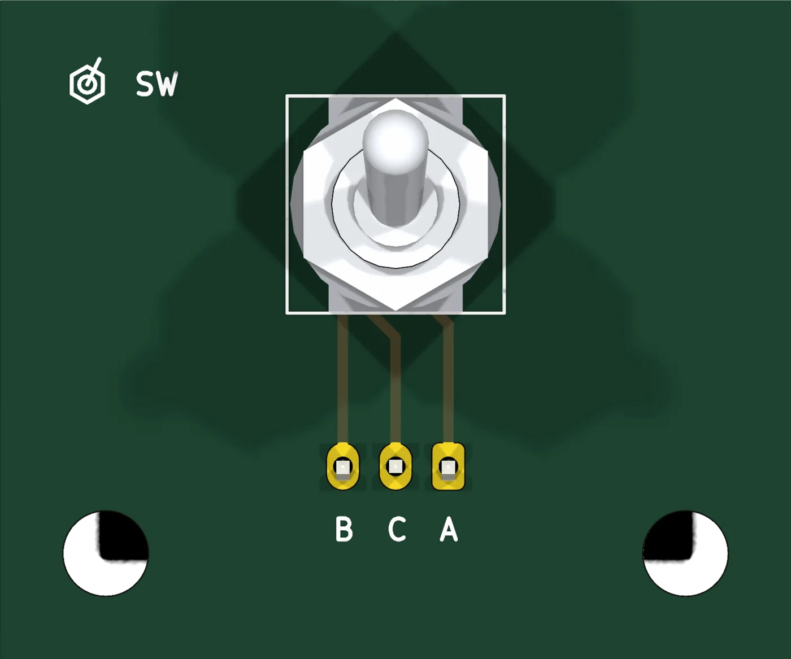
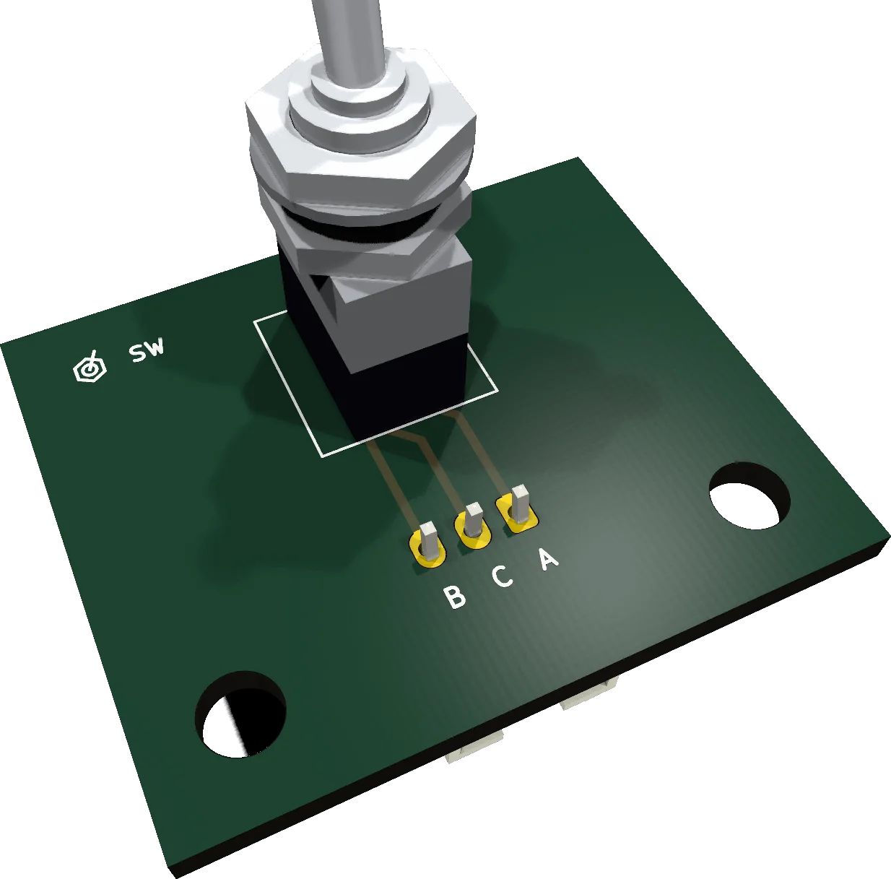
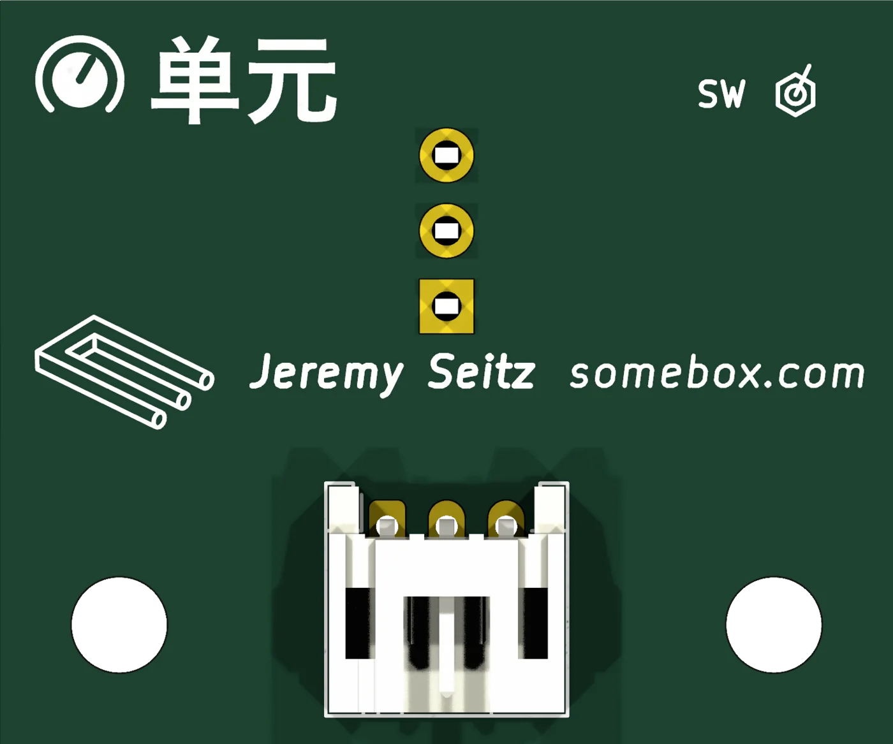
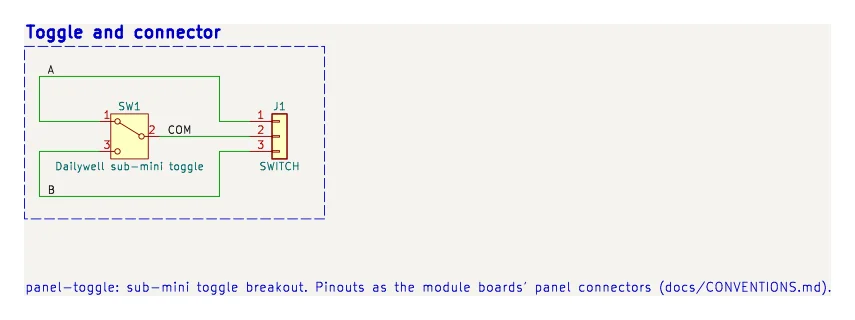

Toggle breakout: one sub-mini toggle on a lead
A small board for one Dailywell sub-mini toggle, on-on or on-off-on, with a 3-pin JST PH connector on its back.
A small board for one Dailywell sub-mini toggle, either the on-on or the on-off-on kind, which share a body and footprint. The toggle's pins run up and down the board, so with the breakout hanging below its toggle the lever moves up and down, and up connects common to A. That is how the modules read up: the VCO's OCTAVE switch up is one octave higher.
A straight-through 3-pin PH lead joins it to a module's switch connector. Like the other breakouts it has two M3 holes in the same place, for standoffs or a printed holder. Not built yet.
- Status
- In the first test order, being placed
- Version
- v1.1.2 (2026-10-25)
- Board
- 30 × 25 mm, 2 layers
- First order
- 10 bare boards
- Progress
- follow its tracking issue



What it does
- One Dailywell sub-mini toggle: on-on, or on-off-on with the centre off.
- A 3-pin JST PH side-entry connector on the back: 1 A, 2 common, 3 B.
- Lever up connects common to A.
- 30 × 25 mm; the toggle on the centre line, 7.75 mm from the top.
- Two M3 holes, 4 mm in from the sides and the bottom, 22 mm apart.
Pins
| 1 | A |
| 2 | C |
| 3 | B |
Wiring and setup
- A straight-through 3-pin PH lead to the module's switch connector.
- The legend on the front, left to right: B, C, A (C is common).
- On an on-off-on toggle, the centre position leaves common open.
Limits and open questions
- Not built yet.
Development notes
- I wanted one breakout for both the toggle and the button, but they can't share a spot without their footprints overlapping, so they are two.
Schematic
The schematic as drawn, with each chip named by its function rather than its part number. The design isn't open source yet, so there are no files to download.


Would you use a SW? A thumbs-up on its tracking issue is how I count interest, and you can subscribe there to follow its bring-up. Questions and ideas go to the discussions.